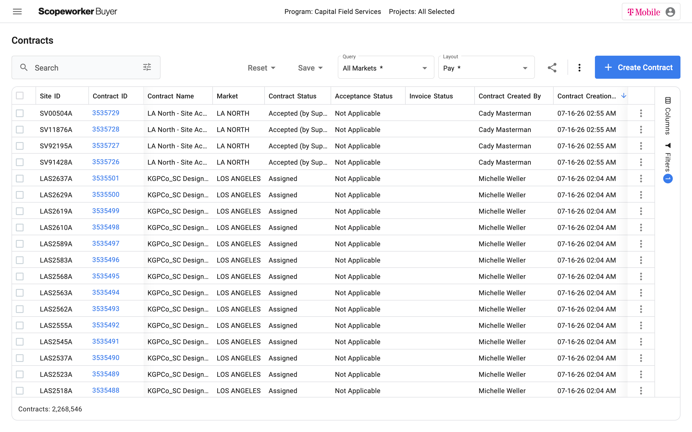
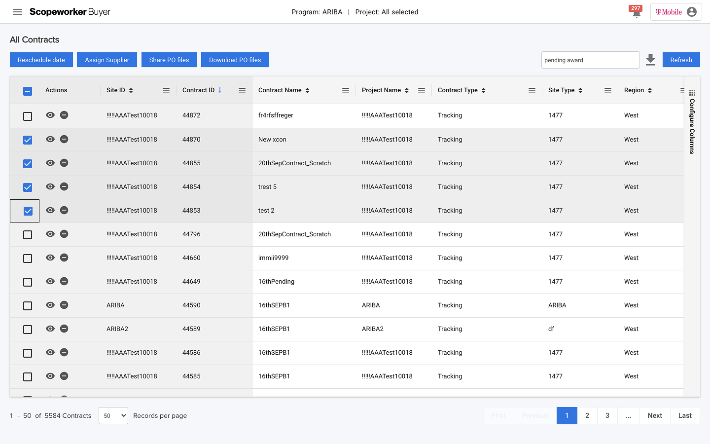
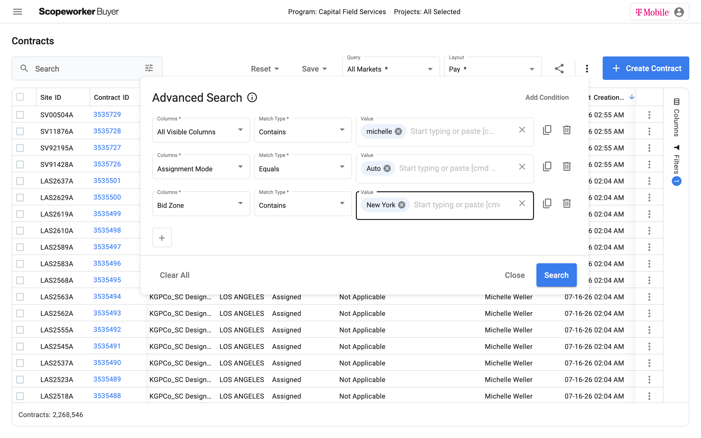
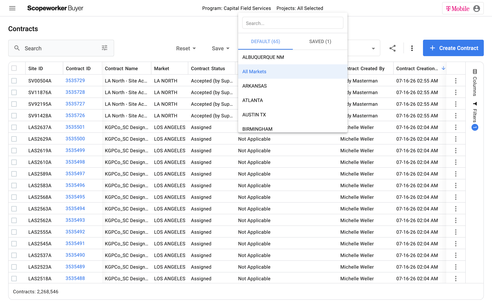
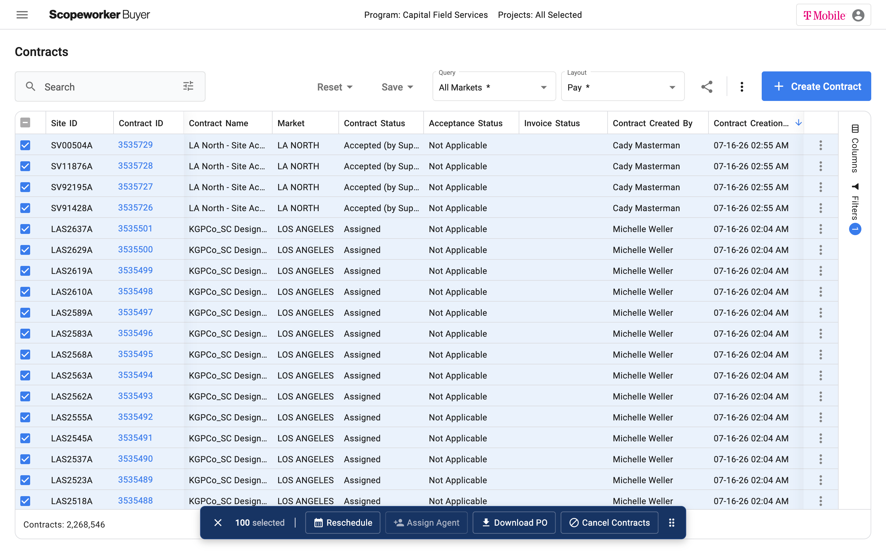

A paid feature commitment to ScopeWorker's largest client couldn't be bolted onto a 7-year-old page. So I rebuilt the foundation — and mapped every write path in the platform to keep 70 columns of data in sync.

T-Mobile, ScopeWorker's largest client, had purchased advanced condition-based search and saved views as a paid add-on. Delivering it wasn't optional — it was a commitment already sold.
The problem: neither feature could be built on top of the existing contract dashboard. The page was a ~7-year-old legacy build that couldn't support the new functionality. And for T-Mobile specifically — with 2.3 million contracts created in a single program over three years — it was also failing at a more basic level: the page, which gates every other action on the platform until it loads, was taking 15–20 seconds to open.

Delivering what T-Mobile had paid for meant deciding how to rebuild the foundation underneath it — not just designing two new features.
Any one of these might have justified a smaller patch. Together, they made the case:
So the real decision wasn't "should we rebuild" — it was "given that we have to rebuild, what's the most optimized foundation to build the paid features on."
Working with engineering, I traced the slowness to the data model. Each contract's live status was assembled by joining across many separate tables in real time — even for just the first 100 contracts on initial load. As columns and live data points were added over the years, join complexity grew, but the schema never changed to accommodate it.
The initial fix was moving contract data into OpenSearch, decoupling reads from the expensive joins. That surfaced a harder problem.
Moving to OpenSearch solved the join problem but introduced a new one — the index quickly went stale, with no pipeline keeping it current. Users would often see outdated contract data on load.
Fixing this meant mapping every single action, anywhere on the platform, that could change any of the 70 data points shown on this page. I went through the platform action by action — status changes, supplier assignments, date edits, cancellations, line item updates, and more — and catalogued which fields each one touched. That map became the spec for a real-time sync pipeline (built with Kafka) feeding OpenSearch.
Not the performance tuning. The exhaustive, systems-level audit of every write path in the platform — that's what made the OpenSearch move actually work.
I ran this as PM for a three-person senior engineering team (one full-stack, one backend, one frontend) over roughly two and a half months, while continuing to manage other products in parallel. Resourcing wasn't a hard sell — since this delivered a feature T-Mobile had already paid for, the business case was largely made for us.
My scope covered diagnosis, prioritization, and spec-writing for the rebuild; sprint management across the project; and end-to-end QA — verifying not just functionality, but that performance held under load and that no contract data was lost or misrepresented in the new system.
Fixes shipped:



Replacing the entry point for millions of contracts carried real risk. That shaped how we shipped it:
No dual-run period. One overnight cutover, rollback plan on standby. Cutover held.
The page still defaults to loading the full contract history — including dormant contracts three-plus years old — rather than active contracts only. For a client like T-Mobile, that means computing over 2.3 million rows on every load when the vast majority aren't relevant to daily work.
I haven't yet made the case to T-Mobile for defaulting to active-only views, but it's the next obvious optimization — both for user experience and for reducing the computation cost we solved so much of the rest of this project to fix.